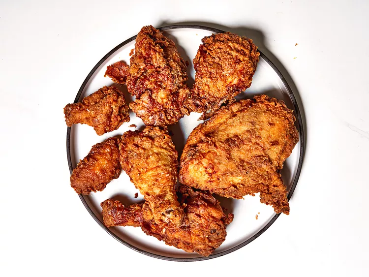

Classic Spicy Southern Fried Chicken

Roscoe's classic spicy Southern fried chicken is the real deal—deeply golden
and crisp on the outside, and moist and tender inside. Marinated in
buttermilk and hot sauce, it's spicy and flavorful.
Ingredients
- 1 whole chicken, cut into 8 pieces
- 2 cups buttermilk
- 3 large eggs
- 7 dashes hot sauce
- 2 tablespoons kosher salt, divided
- 2 tablespoons freshly ground black pepper, divided
- 2 cups all-purpose flour
- 1 tablespoon onion powder
- 1 teaspoon garlic powder
- 1 teaspoon paprika
- 1 teaspoon dried oregano
- 1 teaspoon cayenne pepper
- 1 quart vegetable oil for frying, or as needed
Directions
- Combine chicken, buttermilk, eggs, hot sauce, 1 tablespoon salt, and
1 tablespoon black pepper in a large bowl. Stir until coated. Cover and
refrigerate for at least 20 minutes or up to overnight,
- Combine flour, remaining 1 teaspoons salt, remaining 1 tablespoon black
pepper, onion powder, garlic powder, paprika, oregano, and cayenne in a
large bowl; whisk until well combined. Set a wire rack over a rimmed baking sheet.
- Remove chicken from the refrigerator. Working with one piece at a time
remove from the marinade and allow excess to drip off into flour
dredge. Drop chicken into flour dredge. Coat evenly in the flour
mixture, pressing dredge onto chicken. Set pieces on the prepared wire
rack. When all pieces are coated, dredge and press each piece a second
time; return chicken to the wire rack.
- Pour oil into a large Dutch oven to a depth of 1 inch. Heat over
medium-high heat until it reaches 350 degrees F (175 degrees C). Place a
clean wire rack over a paper towel-lined baking sheet.
- Add a few chicken pieces to the hot oil and cook, turning once or twice,
until golden brown on the outside, no longer pink at the bone, and the
juices run clear, 10 to 15 minutes. An instant read thermometer inserted
near the bone should read 165 degrees F (74 degrees C).
Maintain the oil temperature around 320 degrees F (160 degrees C) during
cooking. Remove chicken to the prepared clean wire rack. Return oil to
350 degrees F (175 degrees C) and repeat to fry remaining chicken. Serve immediately.